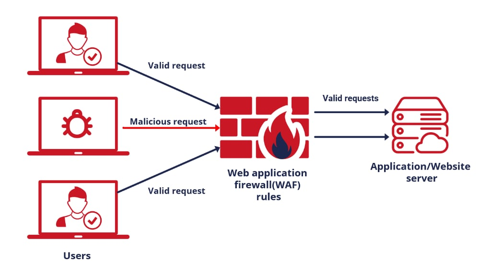

SEGURANÇA
A Nuvem AWS possibilita um modelo de responsabilidade compartilhada.
A AWS gerencia a segurança DA nuvem; você é responsável pela segurança NA nuvem.
Você mantém o controle da segurança que escolhe implementar para proteger seu próprio conteúdo, plataforma, aplicativos, sistemas e redes, da mesma forma que faria em um centro de dados local.
Benefícios da Segurança AWS
| Aplicação | Benefício |
|---|---|
| Mantenha seus dados seguros | A infraestrutura AWS implementa sólidas proteções para garantir a segurança dos seus dados, armazenando-os em data centers altamente seguros. |
| Atenda aos requisitos de conformidade | A AWS gerencia dezenas de programas de conformidade em sua infraestrutura, simplificando o caminho para atender aos requisitos regulatórios, com segmentos significativos da conformidade já concluídos. |
| Economize dinheiro | Reduza custos ao utilizar os data centers eficientes da AWS, mantendo um alto padrão de segurança sem a necessidade de gerenciar instalações próprias. |
| Dimensione rapidamente | A segurança na Nuvem AWS se adapta dinamicamente ao crescimento do seu negócio. Independentemente do tamanho da sua empresa, a infraestrutura da AWS é projetada para manter seus dados seguros enquanto você dimensiona rapidamente suas operações. |
Conformidade
A Conformidade com a Nuvem AWS permite que você compreenda os controles robustos implementados pela AWS para manter a segurança e proteção de dados na nuvem.
Conforme os sistemas são construídos sobre a infraestrutura da Nuvem AWS, as responsabilidades de conformidade serão compartilhadas.
Os programas de conformidade incluem:
- Certificações / atestações.
- Leis, regulamentações e privacidade.
- Alinhamentos / estruturas.
AWS Artifact
O AWS Artifact é sua principal fonte de informações relacionadas à conformidade relevantes para você.
Ele fornece acesso sob demanda aos relatórios de segurança e conformidade da AWS e a acordos online selecionados.
Os relatórios disponíveis no AWS Artifact incluem nossos relatórios de Controle de Organização de Serviços (SOC), relatórios de Indústria de Cartões de Pagamento (PCI) e certificações de órgãos de acreditação em várias geografias e verticais de conformidade, que validam a implementação e eficácia operacional dos controles de segurança da AWS.
Os acordos disponíveis no AWS Artifact incluem o Adendo de Associado Comercial (BAA) e o Acordo de Não Divulgação (NDA).
Amazon GuardDuty
O Amazon GuardDuty oferece detecção de ameaças e monitoramento contínuo de segurança para comportamentos maliciosos ou não autorizados, ajudando a proteger suas contas e cargas de trabalho da AWS.
Serviço de detecção de ameaças inteligente.
Detecta comprometimento de conta, comprometimento de instância, reconhecimento malicioso e comprometimento de bucket.
Monitoramento contínuo de eventos em:
-
Eventos do AWS CloudTrail: GuardDuty analisa eventos do AWS CloudTrail para detecção de ameaças.
-
Amazon Virtual Private Cloud (Amazon VPC) Flow Logs: Utiliza logs de fluxo da Amazon VPC para análise de atividades.
-
Logs de Consulta DNS: Examina logs de consulta DNS em busca de padrões suspeitos.
-
Eventos do Amazon Simple Storage Service (Amazon S3): Coleta eventos do plano de dados do Amazon S3 para reforçar a segurança.
-
Logs de Auditoria do Amazon Elastic Kubernetes Service (Amazon EKS): Monitora a atividade do plano de controle do Amazon EKS por meio da análise de logs de auditoria do Kubernetes.
-
Proteção contra Malware no Amazon Elastic Block Store (EBS): Lançou a proteção contra malware no Amazon EBS para escanear arquivos maliciosos em instâncias EC2 ou cargas de trabalho de contêineres usando volumes EBS.
-
Proteção Amazon RDS: Identifica potenciais ameaças aos dados armazenados em bancos de dados Amazon Aurora, agora disponível geralmente.
AWS WAF
O AWS WAF é um firewall de aplicativos da web.
Protege contra exploits comuns que poderiam comprometer a disponibilidade do aplicativo, comprometer a segurança ou consumir recursos excessivos.
O WAF permite que você crie regras para filtrar o tráfego da web com base em condições que incluem endereços IP, cabeçalhos e corpo HTTP ou URIs personalizados.
O WAF facilita a criação de regras que bloqueiam exploits comuns da web, como injeção de SQL e script entre sites. As regras são conhecidas como ACLs da Web.
AWS Shield
O AWS Shield é um serviço gerenciado de proteção contra negação de serviço distribuído (DDoS).
Salvaguarda aplicativos da web em execução na AWS com detecção sempre ativa e mitigação automática em linha.
Ajuda a minimizar a indisponibilidade e latência do aplicativo.
Dois níveis disponíveis:
- Padrão, que é gratuíto e disponível automaticamente em todas as contas
- Avançado., que é pago, contém suporte 24/7 e amplia a proteção do seu ambiente.
Serviço de Gerenciamento de Chaves AWS (AWS KMS)
O Serviço de Gerenciamento de Chaves AWS oferece controle centralizado sobre as chaves de criptografia usadas para proteger seus dados.
Você pode criar, importar, rotacionar, desativar, excluir, definir políticas de uso e auditar o uso de chaves de criptografia usadas para criptografar seus dados.
O AWS KMS está integrado à maioria dos outros serviços da AWS, facilitando a criptografia dos dados armazenados nesses serviços com chaves de criptografia que você controla.
O AWS KMS está integrado ao AWS CloudTrail, que fornece a capacidade de auditar quem usou quais chaves, em quais recursos e quando.
O AWS KMS permite que os desenvolvedores criptografem facilmente dados, seja por meio de criptografia em um clique no Console de Gerenciamento da AWS ou usando o AWS SDK para adicionar facilmente a criptografia no código de sua aplicação.
AWS CloudHSM
O AWS CloudHSM é um módulo de segurança de hardware (HSM) baseado em nuvem que permite gerar e usar facilmente suas próprias chaves de criptografia na Nuvem AWS.
Com o CloudHSM, você pode gerenciar suas próprias chaves de criptografia usando HSMs validados pelo FIPS 140-2 Nível 3.
O CloudHSM oferece a flexibilidade de integrar-se às suas aplicações usando APIs padrão do setor, como PKCS#11, Extensões de Criptografia Java (JCE) e bibliotecas Microsoft CryptoNG (CNG).
Exemplos de HSM:

AWS Certificate Manager (Gerenciador de Certificados AWS)
O Gerenciador de Certificados AWS é um serviço que permite provisionar, gerenciar e implantar facilmente certificados Secure Sockets Layer/Transport Layer Security (SSL/TLS) públicos e privados para uso com serviços da AWS e recursos conectados internamente.
Os certificados SSL/TLS são usados para garantir as comunicações de rede e estabelecer a identidade de sites na Internet, bem como de recursos em redes privadas.
O AWS Certificate Manager elimina o processo manual demorado de compra, upload e renovação de certificados SSL/TLS.
AWS Inspector
O Inspector é um serviço automatizado de avaliação de segurança que ajuda a melhorar a segurança e conformidade de aplicativos implantados na AWS.
O Inspector avalia automaticamente aplicativos em busca de vulnerabilidades ou desvios das melhores práticas.
Usa um agente instalado em instâncias EC2.
As instâncias devem ser marcadas.
AWS Trusted Advisor
O AWS Trusted Advisor é um recurso online que ajuda a reduzir custos, aumentar o desempenho e melhorar a segurança otimizando seu ambiente AWS.
Imagem exemplo, da categoria de otimização de custos, que apresenta 16 verificações (verdes) que não apresentam problemas.
Os planos de suporte básico e developer oferecem verificações básicas de segurança limitadas. Para ter acesso a um conjunto completo de verificações, é necessário ter o Trusted Advisor no plano de suporte Business ou superior.
O Trusted Advisor examina sua infraestrutura AWS e a compara com as melhores práticas da AWS em seis categorias:
-
Otimização de custos
-
Recomendações que podem economizar dinheiro.
-
Essas verificações destacam recursos não utilizados e oportunidades para reduzir sua fatura.
-
-
Performance (desempenho)
-
Recomendações que podem melhorar a velocidade e a capacidade de resposta de suas aplicações.
-
-
Segurança
-
Recomendações para configurações de segurança que podem tornar a solução da AWS mais segura.
-
-
Tolerância a falhas
-
Recomendações que ajudam a aumentar a resiliência da sua solução da AWS.
-
Essas verificações destacam deficiências de redundância e recursos usados em excesso.
-
-
Limites de serviço
-
Verifica o uso de sua conta e se sua conta se aproxima ou excede o limite (também conhecido como cotas) para serviços e recursos da AWS.
-
-
Excelência operacional
-
Recomendações para ajudá-lo a operar seu AWS ambiente de forma eficaz e em grande escala.
-
Teste de Penetração
O teste de penetração é a prática de testar a segurança de sua própria aplicação em busca de vulnerabilidades simulando um ataque.
A AWS permite testes de penetração. Existe um conjunto limitado de recursos nos quais os testes de penetração podem ser realizados.
Você não precisa de permissão para realizar testes de penetração nos seguintes serviços:
- Instâncias Amazon EC2, NAT Gateways e Elastic Load Balancers.
- Amazon RDS.
- Amazon CloudFront.
- Amazon Aurora.
- Portões de API da Amazon.
- Funções AWS Lambda e funções Lambda Edge.
- Recursos Amazon LightSail.
- Ambientes Amazon Elastic Beanstalk.
Em caso de conta comprometida:
- Altere a senha da sua conta raiz da AWS.
- Altere todas as senhas dos usuários do IAM.
- Exclua ou rotacione todas as chaves de acesso programático (API).
- Exclua quaisquer recursos em sua conta que você não tenha criado.
- Responda a quaisquer notificações recebidas da AWS por meio do Centro de Suporte da AWS e/ou entre em contato com o Suporte da AWS para abrir um chamado de suporte.
Logon Único da AWS (AWS SSO)
O Logon Único da AWS (AWS SSO) é um serviço de logon único (SSO) baseado em nuvem que facilita o gerenciamento centralizado do acesso SSO a todas as suas contas AWS e aplicativos de nuvem.
Ele ajuda a gerenciar o acesso SSO e as permissões do usuário em todas as suas contas AWS em Organizações da AWS.
O AWS SSO também ajuda a gerenciar o acesso e as permissões a aplicativos de software como serviço (SaaS) comumente usados, aplicativos integrados ao AWS SSO, bem como aplicativos personalizados que suportam a Linguagem de Marcação de Assertividade de Segurança (SAML) 2.0.
O AWS SSO inclui um portal do usuário onde seus usuários finais podem encontrar e acessar todas as suas contas AWS atribuídas, aplicativos de nuvem e aplicativos personalizados em um só lugar.
Amazon Cognito
O Amazon Cognito permite que você adicione facilmente registro de usuários, login e controle de acesso aos seus aplicativos web e móveis.
O Amazon Cognito escala para milhões de usuários e oferece suporte ao login por meio de provedores de identidade social, como Apple, Facebook, Google e Amazon, além de provedores de identidade corporativos via SAML 2.0 e OpenID Connect.
Os dois principais componentes do AWS Cognito são os user pools e identity pools:
- User pools são diretórios de usuários que fornecem opções de registro e login para os usuários do seu aplicativo.
- Identity pools permitem que você conceda aos seus usuários acesso a outros serviços da AWS.
- Você pode usar identity pools e user pools separadamente ou juntos.
AWS Directory Services
A AWS oferece vários tipos de diretórios.
Os três tipos a seguir são os que aparecem atualmente no exame e serão abordados nesta página:
| Opção de Serviço de Diretório | Descrição | Caso de Uso |
|---|---|---|
| AWS Directory Service for Microsoft Active Directory | AD Microsoft completo gerenciado pela AWS, executando o Windows Server 2012 R2 | Empresas que desejam um AD Microsoft hospedado ou que precisam de LDAP para aplicativos Linux |
| AD Connector | Permite que usuários locais façam login nos serviços da AWS com suas credenciais AD existentes. Também permite que instâncias EC2 se juntem ao domínio AD. | Login único para funcionários locais e para adicionar instâncias EC2 ao domínio |
| Simple AD | Implementação AD de baixa escala e custo baseada no Samba | Diretório de usuários simples ou necessidade de compatibilidade com LDAP |
Como alternativa ao serviço de diretório da AWS, você pode criar seus próprios controladores de domínio AD da Microsoft na nuvem da AWS (no EC2).
AWS Systems Manager Parameter Store
Fornece armazenamento seguro e hierárquico para gerenciamento de dados de configuração e gerenciamento de segredos.
É altamente escalável, disponível e durável.
Você pode armazenar dados como senhas, strings de banco de dados e códigos de licença como valores de parâmetro.
Você pode armazenar valores como texto simples (dados não criptografados) ou texto cifrado (dados criptografados).
Você pode então fazer referência a valores usando o nome exclusivo que você especificou ao criar o parâmetro.
AWS Secrets Manager
Permite a rotação nativa e automática de chaves.
Permissões refinadas.
Auditoria central para rotação de segredos.
AWS Artifact
O AWS Artifact é seu recurso central para informações relacionadas à conformidade que são relevantes para você.
Ele fornece acesso sob demanda a relatórios de segurança e conformidade da AWS e a alguns acordos online selecionados.
Os relatórios disponíveis no AWS Artifact incluem nossos relatórios de Controle de Organização de Serviços (SOC), relatórios da Indústria de Cartões de Pagamento (PCI) e certificações de órgãos de acreditação em várias geografias e verticais de conformidade que validam a implementação e eficácia operacional dos controles de segurança da AWS.
Os acordos disponíveis no AWS Artifact incluem o Adendo de Associado Comercial (BAA) e o Acordo de Não Divulgação (NDA).